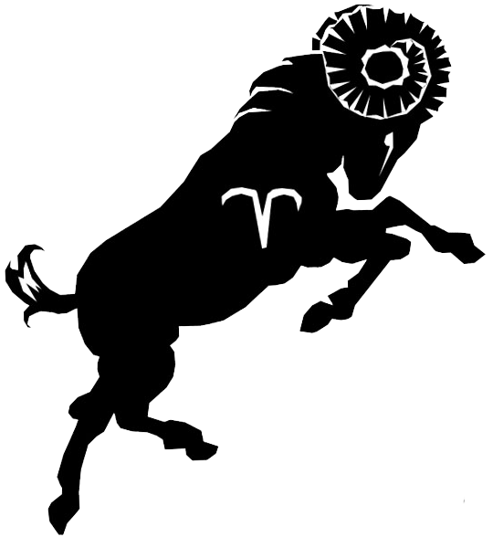

Основная информация
 О́ве́н — первый знак зодиака, соответствующий сектору эклиптики от 0° до 30°, считая от точки весеннего равноденствия; кардинальный знак тригона (трёх знаков) «огонь». В созвездии Овна Солнце находится с 19 апреля по 13 мая, однако в западной астрологии Овну отводится период с 21 марта по 20 апреля.
Как первый знак цикла, символизирует начало эволюции; он также последний знак цикла, выражающий возврат к началу и возрождение. Символизм животного — его первичность и роль проводника, а также симметричность двух рогов спиральной формы противоположного направления
Как все зодиакальные знаки стихии огня, это мужской, положительный (движение по часовой стрелке) и активный дом Солнца. Его качества из четырёх элементарных — «горячий» и «сухой»; цвет — красный. Это «обитель» планеты Марс (в греко-римском зодиаке, тогда как в первоначальном зодиаке — Меркурий; а «в изгнании» (обитель напротив) — планета Венера, также экзальтирует Солнце, в падении Сатурн. Связанный со знаком миф — о Ясоне и Золотом руне. В схематическом делении тела человека на 12 частей — управляет головой (первой частью сверху), мозгом, а также селезёнкой и надпочечниками.
Западный зодиак
Овен является первым зодиакальным знаком как в порядке следования, так и в пространственном чередовании на колесе жизни. Он связан с первостихией (элементом) огня, где является исходным состоянием («аспектом»), внутренним «равновесием», именуемым «саттва» на санскрите.
Знак Овна представляет весеннее равноденствие. Ему полярно противостоит знак Весов ♎︎ (входящий символ первостихии воздуха; саттва) осеннего равноденствия.
В Зодиаке Овну соответствует планета Марс. Стоит заметить, что связь между греко-римской мифологией и планетами Солнечной системы довольно очевидна, чтобы не обращать на это внимание.
В других зодиаках
В вавилонском зодиаке этот знак именовался «подёнщиком», «волонтёром на день» (фр. le Journalier). Именование «овен» относилось же к богу Эа — «эридуйскому овну», который спас человечество от Всемирного потопа, построив из тростника большую лодку, куда он поместил человека и животных. Символом бога Эа был посох с головой барана.
Знаменитости, родившиеся под знаком Овна
Риз Уизерспун, Эмма Уотсон, Кира Найтли, Сара Джессика Паркер, Леди Гага, Селин Дион, Лайма Вайкуле, Анастасия Заворотнюк, Валентина Матвиенко, Ирина Хакамада, Алла Пугачева, Виктория Бекхэм, Елена Темникова, Мария Шарапова.
Гари Олдмен, Александр Цекало, Эрих Фромм, Владимир Кличко, Элтон Джон, Гарри Гудини, Квентин Тарантино, Максим Горький, Винсент Ван Гог, Юэн Макгрегор, Николай Гоголь, Сергей Рахманинов, Сергей Лазарев, Марлон Брандо, Роберт Дауни-младший, Хит Леджер, Джеки Чан, Игорь Акинфеев, Джереми Кларксон, Сергей Шнуров, Леонардо да Винчи, Иван Ургант, Чарли Чаплин, Адольф Гитлер, Джеймс Франко, Ричард Докинз, Отто фон Бисмарк, Владимир Познер